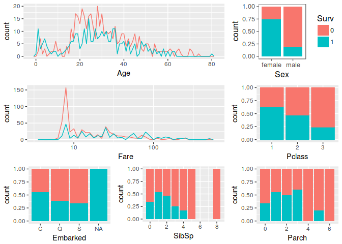
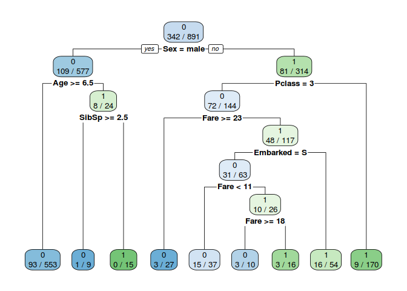
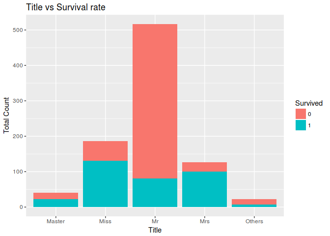
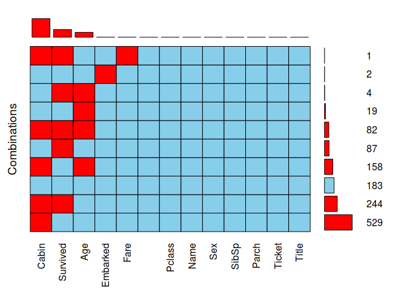
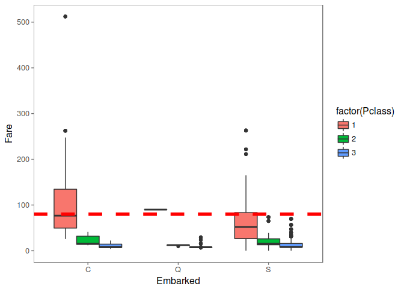
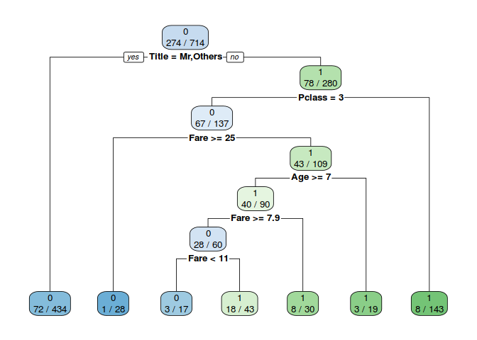
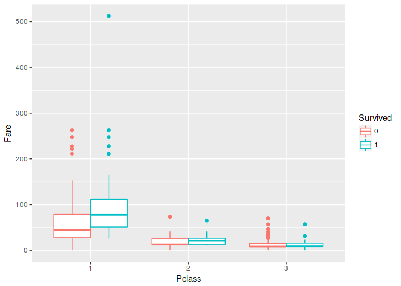
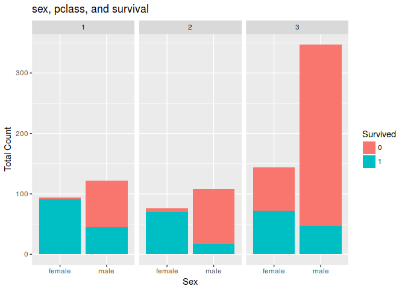

- Sat 22 July 2017
- Data Science
- M Hendra Herviawan
- #R
set.seed(1111)
library('dplyr')
library('readr')
library('pander')
library('ggplot2')
library('ggthemes')
library('VIM')
library('caret')
library('rpart')
library('rpart.plot')
library('glmnet')
library('xgboost')
#Dataset download from https://www.kaggle.com/c/titanic/data
train <- read_csv('_dataset//train.csv')
test <- read_csv('_dataset//test.csv')
train[1:5]
##
## -------------------------------------------------------------------------------
## PassengerId Survived Pclass Name Sex Age
## ------------- ---------- -------- ------------------------------ -------- -----
## 1 0 3 Braund, Mr. Owen Harris male 22
##
## 2 1 1 Cumings, Mrs. John Bradley female 38
## (Florence Briggs Thayer)
##
## 3 1 3 Heikkinen, Miss. Laina female 26
##
## 4 1 1 Futrelle, Mrs. Jacques Heath female 35
## (Lily May Peel)
##
## 5 0 3 Allen, Mr. William Henry male 35
## -------------------------------------------------------------------------------
##
## Table: Table continues below
##
##
## -------------------------------------------------------------
## SibSp Parch Ticket Fare Cabin Embarked
## ------- ------- ------------------ ------- ------- ----------
## 1 0 A/5 21171 7.25 NA S
##
## 1 0 PC 17599 71.28 C85 C
##
## 0 0 STON/O2. 3101282 7.925 NA S
##
## 1 0 113803 53.1 C123 S
##
## 0 0 373450 8.05 NA S
## -------------------------------------------------------------
1. Can you explain what are the characteristics of this analysis?
It is a type of supervised learning, a method of machine learning where the categories are predefined, and is used to categorize new probabilistic observations into a categories. When there are only two categories the problem is known as binary classification. Binary classification involves classifying the data into two groups (Survived vs Non Survived), e.g. whether or not a customer buys a particular product or not (Yes/No), based on independent variables such as gender, age, location etc.

2. What are the informations in data that can be considered as features?
In general we can categorize feature as structured vs unstructure. structured data is comprised of clearly defined data types (numeric, string, category, etc) whose pattern makes them easily understood. while unstructured data – “everything else” – is comprised of data that is usually not as easily understood and need preprocessing to gain understanding.
summary(combine)
## PassengerId Survived Pclass Name Sex
## Min. : 1 0 :549 1:323 Length:1309 female:466
## 1st Qu.: 328 1 :342 2:277 Class :character male :843
## Median : 655 NA's:418 3:709 Mode :character
## Mean : 655
## 3rd Qu.: 982
## Max. :1309
##
## Age SibSp Parch Ticket
## Min. : 0.17 Min. :0.0000 Min. :0.000 Length:1309
## 1st Qu.:21.00 1st Qu.:0.0000 1st Qu.:0.000 Class :character
## Median :28.00 Median :0.0000 Median :0.000 Mode :character
## Mean :29.88 Mean :0.4989 Mean :0.385
## 3rd Qu.:39.00 3rd Qu.:1.0000 3rd Qu.:0.000
## Max. :80.00 Max. :8.0000 Max. :9.000
## NA's :263
## Fare Cabin Embarked
## Min. : 0.000 Length:1309 C :270
## 1st Qu.: 7.896 Class :character Q :123
## Median : 14.454 Mode :character S :914
## Mean : 33.295 NA's: 2
## 3rd Qu.: 31.275
## Max. :512.329
## NA's :1
In the Titanic dataset PassengerId, Name, Ticket can be considered as unstructure becouse we need to preprocessing to gain understanding what is the meaning behind sequence of digit/char.
To help examine importance feature in structured data we can use decision tree to build feature importance. importance provides a score that indicates how useful or valuable each feature was in the construction of the decision trees.
#Use Decision Tree to get importance feature
x <- select(train, -c(PassengerId, Name, Ticket, Cabin))
Model_DT=rpart(Survived~.,data=x,method="class")
rpart.plot(Model_DT,extra = 3,fallen.leaves = T)

3. Do you need to create any new features?
When looking at the decision tree above it appears that sex, age & pclass are the 3 most important features. When creating the Decison tree we only can use structured data becouse limitation of decision tree algoritma.
head(combine$Name)
## [1] "Braund, Mr. Owen Harris"
## [2] "Cumings, Mrs. John Bradley (Florence Briggs Thayer)"
## [3] "Heikkinen, Miss. Laina"
## [4] "Futrelle, Mrs. Jacques Heath (Lily May Peel)"
## [5] "Allen, Mr. William Henry"
## [6] "Moran, Mr. James"
If we examine closely Name Feature it has pattern "last name"+"Title"+"First name". We can use title as category feature because title represents sex, age & pclass/wealth the 3 most importance feature based on decision tree.
names <- combine$Name
Title <- gsub("^.*, (.*?)\\..*$", "\\1", names)
combine$Title <- Title
combine$Title[combine$Title == 'Mlle'] <- 'Miss'
combine$Title[combine$Title == 'Ms'] <- 'Miss'
combine$Title[combine$Title == 'Mme'] <- 'Mrs'
combine$Title[combine$Title == 'Lady'] <- 'Miss'
combine$Title[combine$Title == 'Dona'] <- 'Miss'
# Titles with very low cell counts to be combined to "others" level
others_Title <- c('the Countess','Capt', 'Col', 'Don',
'Dr', 'Major', 'Rev', 'Sir', 'Jonkheer')
combine$Title[combine$Title %in% others_Title] <- 'Others'
combine$Title <- factor(combine$Title)
#table(combine$Title)
Lets check who among Mr, Master, Miss having a better survival rate
ggplot(combine[1:891,],aes(x = Title,fill=factor(Survived))) +
geom_bar() +
ggtitle("Title vs Survival rate")+
xlab("Title") +
ylab("Total Count") +
labs(fill = "Survived")

4. Do you need to scale any of the features?
We need to do scale or normalization when there is class imbalance or use algoritma that sensitive to data skewness like Neural Network/Deeplearning. In this assisgment we dont need to to data scaling becouse we will use algortima that based on decision tree.
5. Please recap the missing values on the dataset, What will you do with the missing data?
aggr(combine, prop = FALSE, combined = TRUE, numbers = TRUE, sortVars = TRUE, sortCombs = TRUE)

##
## Variables sorted by number of missings:
## Variable Count
## Cabin 1014
## Survived 418
## Age 263
## Embarked 2
## Fare 1
## PassengerId 0
## Pclass 0
## Name 0
## Sex 0
## SibSp 0
## Parch 0
## Ticket 0
## Title 0
5.1 Cabin
We will delete this feature becouse 1014 is missing from 1309.
5.2 Embarked
filter(combine, is.na(Embarked))
##
## ----------------------------------------------------------------------------
## PassengerId Survived Pclass Name Sex Age
## ------------- ---------- -------- --------------------------- -------- -----
## 62 1 1 Icard, Miss. Amelie female 38
##
## 830 1 1 Stone, Mrs. George Nelson female 62
## (Martha Evelyn)
## ----------------------------------------------------------------------------
##
## Table: Table continues below
##
##
## ----------------------------------------------------------
## SibSp Parch Ticket Fare Cabin Embarked Title
## ------- ------- -------- ------ ------- ---------- -------
## 0 0 113572 80 B28 NA Miss
##
## 0 0 113572 80 B28 NA Mrs
## ----------------------------------------------------------
PassengerId 62 & 830 have same Ticket, Fare and Cabin number, Look like they came from same Embarked. We can use median Fare for every Embarked to fill this missing value.
# Get rid of our missing passenger IDs
embark_fare <- combine %>%
filter(PassengerId != 62 & PassengerId != 830)
# Use ggplot2 to visualize embarkment, passenger class, & median fare
ggplot(embark_fare, aes(x = Embarked, y = Fare, fill = factor(Pclass))) +
geom_boxplot() +
geom_hline(aes(yintercept=80),
colour='red', linetype='dashed', lwd=2) +
scale_y_continuous() +
theme_few()
## Warning: Removed 1 rows containing non-finite values (stat_boxplot).

Since their fare was $80 for 1st class, they most likely embarked from 'C'
combine$Embarked[c(62, 830)] <- 'C'
5.3 Fare
We will use media Fare group by Pcclass to fill missing Fare. Fare and PCClass have strong relationship.
filter(combine, is.na(Fare))
##
## ----------------------------------------------------------------------------
## PassengerId Survived Pclass Name Sex Age SibSp
## ------------- ---------- -------- -------------------- ------ ------ -------
## 1044 NA 3 Storey, Mr. Thomas male 60.5 0
## ----------------------------------------------------------------------------
##
## Table: Table continues below
##
##
## --------------------------------------------------
## Parch Ticket Fare Cabin Embarked Title
## ------- -------- ------ ------- ---------- -------
## 0 3701 NA NA S Mr
## --------------------------------------------------
med_fare_3 <- combine %>%
filter(!is.na(Fare)) %>%
group_by(Pclass) %>%
summarise(med_fare = median(Fare)) %>%
filter(Pclass == 3) %>%
.$med_fare
combine <- combine %>%
mutate(Fare = case_when(
is.na(Fare) ~ med_fare_3,
TRUE ~ Fare
))
5.4 Age
We will use media age from other passanger group by Tittle, Age have strong relationship with tittle.
group_by(combine, Title) %>%
summarise(median = median(Age, na.rm = TRUE))
##
## -----------------
## Title median
## -------- --------
## Master 4
##
## Miss 22
##
## Mr 29
##
## Mrs 35
##
## Others 48
## -----------------
combine <- combine %>%
group_by(Title) %>%
mutate(Age = ifelse(is.na(Age), round(median(Age, na.rm = TRUE), 1), Age))
6. what are first three algorithms that you will to create prediction model for this dataset?
- Decision Tree
- Logistic Regression
- XGBoost
6.1 Decision Tree
A benefit of using ensembles of decision tree methods like gradient boosting is that they can automatically provide estimates of feature importance from a trained predictive model.
Model_DT=rpart(Survived~.,data=train_val,method="class")
rpart.plot(Model_DT,extra = 3,fallen.leaves = T)

PRE_TDT=predict(Model_DT,data=train_val,type="class")
#confusionMatrix(PRE_TDT,train_val$Survived)
confusionMatrix(PRE_TDT,train_val$Survived)$overall[1]
## Accuracy
## 0.8417367
6.2 Logistic Regression
We can also use logistic regression to understand the functional relationship between the independent variables and the dependent variable, to try to understand what might cause the probability of the dependent variable to change
log.mod <- glm(Survived ~ ., family = binomial(link=logit),
data = train_val)
###Check the summary
summary(log.mod)
##
## Call:
## glm(formula = Survived ~ ., family = binomial(link = logit),
## data = train_val)
##
## Deviance Residuals:
## Min 1Q Median 3Q Max
## -2.4137 -0.5832 -0.3970 0.5420 2.4913
##
## Coefficients:
## Estimate Std. Error z value Pr(>|z|)
## (Intercept) 18.084814 535.412123 0.034 0.9731
## Pclass2 -0.807673 0.357734 -2.258 0.0240 *
## Pclass3 -1.919969 0.356317 -5.388 7.11e-08 ***
## Sexmale -14.012905 535.411648 -0.026 0.9791
## Age -0.026667 0.010885 -2.450 0.0143 *
## SibSp -0.567958 0.142798 -3.977 6.97e-05 ***
## Parch -0.332783 0.146378 -2.273 0.0230 *
## Fare 0.006090 0.003488 1.746 0.0808 .
## EmbarkedQ 0.041227 0.443593 0.093 0.9260
## EmbarkedS -0.366009 0.271234 -1.349 0.1772
## TitleMiss -14.725697 535.411961 -0.028 0.9781
## TitleMr -3.482775 0.622842 -5.592 2.25e-08 ***
## TitleMrs -13.884327 535.412100 -0.026 0.9793
## TitleOthers -3.799501 0.933596 -4.070 4.71e-05 ***
## ---
## Signif. codes: 0 '***' 0.001 '**' 0.01 '*' 0.05 '.' 0.1 ' ' 1
##
## (Dispersion parameter for binomial family taken to be 1)
##
## Null deviance: 950.86 on 713 degrees of freedom
## Residual deviance: 593.40 on 700 degrees of freedom
## AIC: 621.4
##
## Number of Fisher Scoring iterations: 12
test.probs <- predict(log.mod, newdata=test_val,type = "response")
table(test_val$Survived,test.probs>0.5)
##
## FALSE TRUE
## 0 98 11
## 1 16 52
print ("Accuracy: "); (96+49) / (96+13+19+49)
## [1] "Accuracy: "
## [1] 0.819209
6.3 XGBoost
XGBoost is used in a number of winning Kaggle solutions. XGBoost employs a number of tricks that make it faster and more accurate than traditional Algoritma. Benefit of using ensembles of decision tree methods like XGBoost is that they can automatically provide estimates of feature importance from a trained predictive model.
# Params for xgboost
param <- list(booster = "gbtree",
#eval_metric = "auc",
objective = "binary:logistic",
eta = .11,
gamma = 1,
max_depth = 6,
min_child_weight = 1,
subsample = .7,
colsample_bytree = .7)
xgb_model <- xgb.train(data = dtrain,
params = param,
watchlist = list(train = dtrain, test = dtest),
nrounds = 72,
verbose = 1,
print_every_n = 9)
## [1] train-error:0.142857 test-error:0.169492
## [10] train-error:0.121849 test-error:0.158192
## [19] train-error:0.116246 test-error:0.175141
## [28] train-error:0.105042 test-error:0.158192
## [37] train-error:0.099440 test-error:0.169492
## [46] train-error:0.100840 test-error:0.158192
## [55] train-error:0.098039 test-error:0.163842
## [64] train-error:0.096639 test-error:0.152542
## [72] train-error:0.093838 test-error:0.163842
# Get the feature real names
names <- dimnames(select(train_val, -c(Survived)))[[2]]
# Compute feature importance matrix
importance_matrix <- xgb.importance(names, model = xgb_model)
# Plotting
xgb.plot.importance(importance_matrix)

7. Do you notice any outliers or noise in the data?
There is no outlier in this dataset, there is passanger that buy ticket for $500 but I think its still normal becouse he/she in claass 1. To examine outliyer we can use box plot to explore.
ggplot(train, aes(Pclass, Fare, colour = Survived)) +
geom_boxplot()

8. How do you measure the quality of your prediction?
binary classification model predicts the probability of a target variable to be Yes/No. To evaluate such a model, a metric called the confusion matrix is used, also called the classification or co-incidence matrix. With the help of a confusion matrix, we can calculate important performance measures
confusionMatrix(PRE_TDT,train_val$Survived)
## Confusion Matrix and Statistics
##
## Reference
## Prediction 0 1
## 0 403 76
## 1 37 198
##
## Accuracy : 0.8417
## 95% CI : (0.8129, 0.8678)
## No Information Rate : 0.6162
## P-Value [Acc > NIR] : < 2.2e-16
##
## Kappa : 0.6562
## Mcnemar's Test P-Value : 0.0003506
##
## Sensitivity : 0.9159
## Specificity : 0.7226
## Pos Pred Value : 0.8413
## Neg Pred Value : 0.8426
## Prevalence : 0.6162
## Detection Rate : 0.5644
## Detection Prevalence : 0.6709
## Balanced Accuracy : 0.8193
##
## 'Positive' Class : 0
##
9. Are there any insights you get when you explore the data?
If you are man, dont be 3rd class persone becouse you probably will die in competition
ggplot(combine[1:891,], aes(x = Sex, fill = Survived)) +
geom_bar() +
facet_wrap(~Pclass) +
ggtitle("sex, pclass, and survival") +
xlab("Sex") +
ylab("Total Count") +
labs(fill = "Survived")
